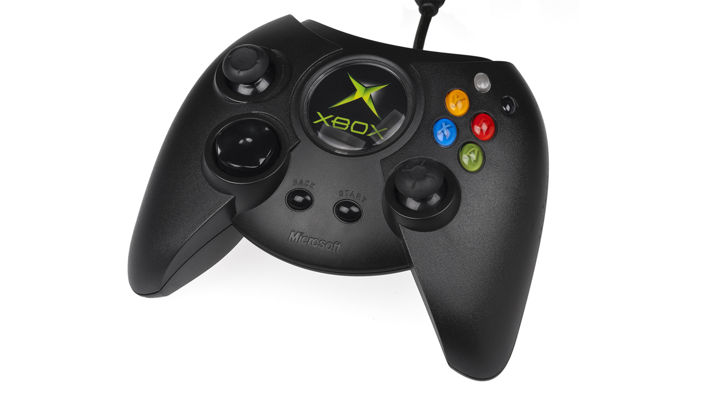
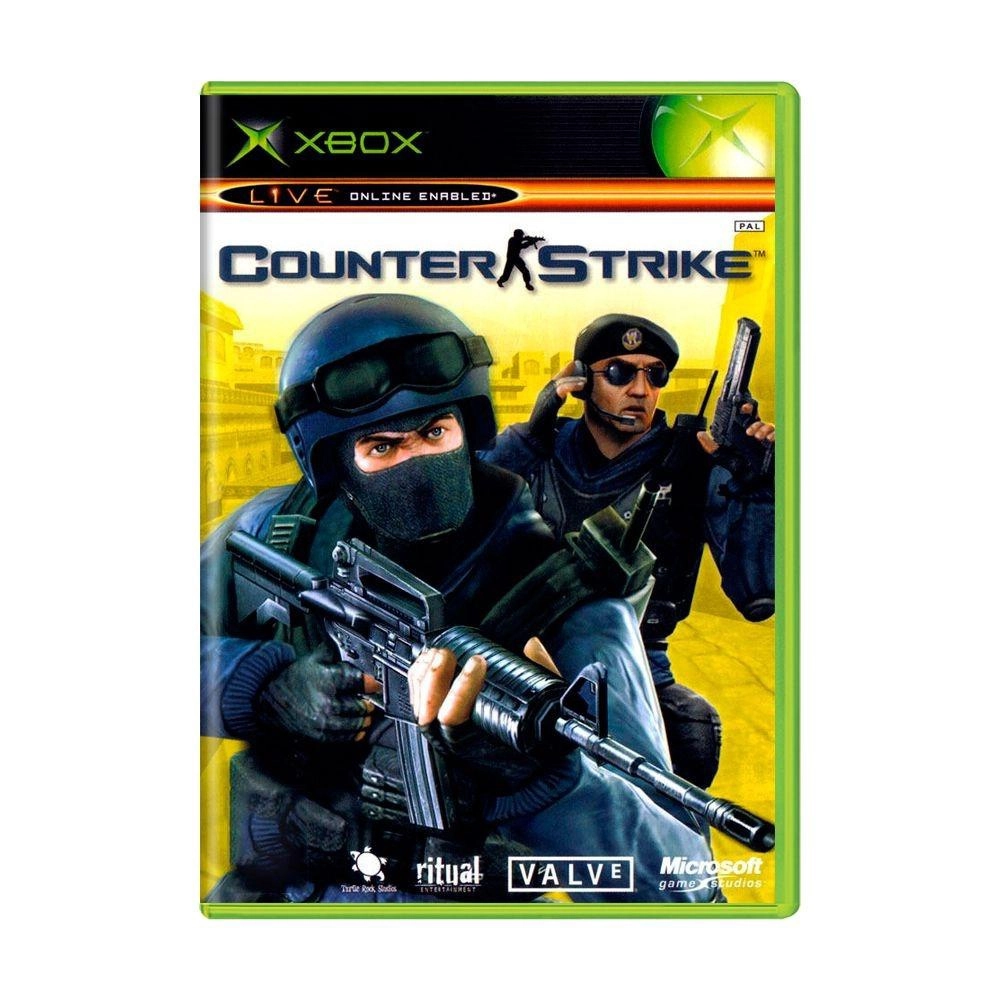
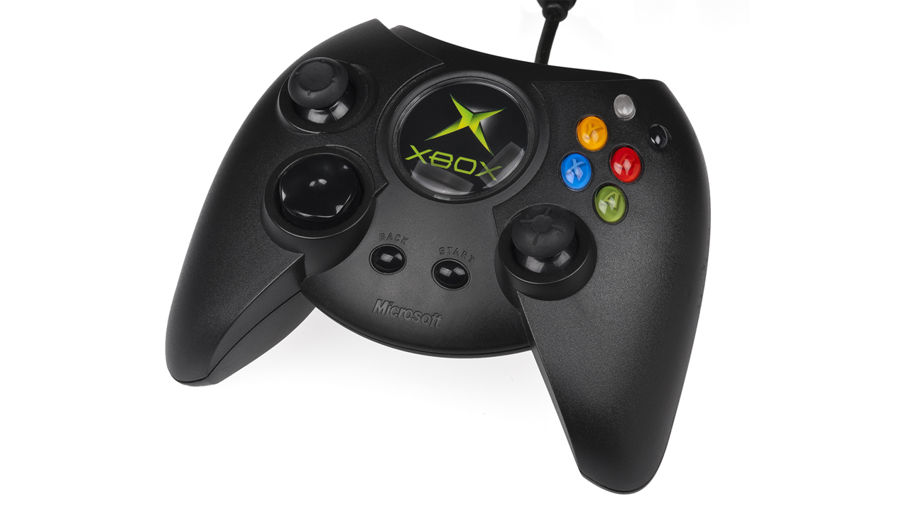
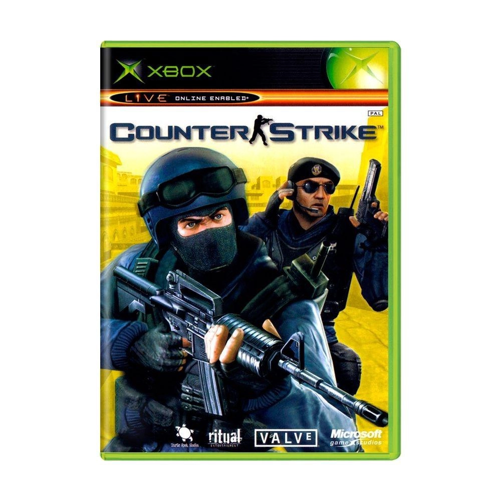

Nesse site, você saberá tudo sobre a história do Xbox, começando pelo seu primeiro console
O primeiro Xbox chegou em 2001 para competir com o PSOne, que já estava no mercado desde 1995, e o recém chegado PlayStation 2, lançado no ano 2000. Além da Sony, a Microsoft também estava de olho no mercado conquistado pela Nintendo e seu Gamecube.
Desde seu surgimento, ainda na era dos CDs, até os poderosos Series X e S, o Xbox se firmou como umas das centrais de entretenimento mais importantes da indústria, agregando à marca serviços de sucesso, como o Xbox Game Pass, e dezenas de estúdios.
Antes da chegada do primeiro Xbox, em novembro de 2001, a Microsoft já tinha seus olhos voltados para games publicando, inclusive, alguns títulos para PC, como Flight Simulator e Age of Empires.
Com a concorrência crescendo e os videogames se tornando uma força real no mercado, a Microsoft decidiu que também queria uma fatia desse bolo. E assim surgiu o primeiro Xbox, com 64 MB de RAM e 8 GB de armazenamento.
Curiosidade: o nome Xbox se originou a partir de DirectX Box e o aparelho havia sido pensado, no início do seu desenvolvimento (lá em 1998), para funcionar mais ou menos como um PC rodando Windows 2000 – o que poderia facilitar a vida dos criadores de conteúdo, que já estavam familiarizados com o sistema.
 


